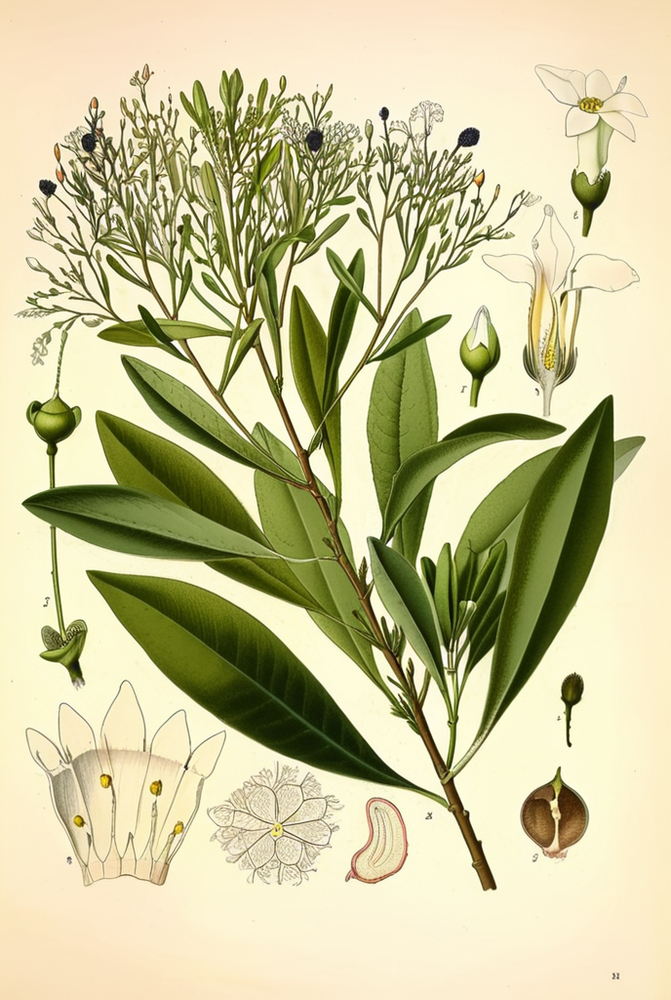

Physalis peruviana
Aguaymanto
Aguaymanto
El Physalis peruviana, conocido como aguaymanto, uchuva o cape gooseberry, es una solanácea nativa de los valles interandinos de Perú, Colombia y Ecuador. Crece entre los 1500 y 3000 metros sobre el nivel del mar, y su fruto dorado — envuelto en un cáliz papiráceo que semeja una linterna china — ha sido cultivado desde la época preincaica.
Los incas valoraban el aguaymanto como alimento de élite, y las semillas encontradas en tumbas precolombinas atestiguan su importancia ceremonial. En las últimas décadas, el fruto ha conquistado mercados internacionales como superalimento, apreciado por su excepcional contenido de vitamina C, carotenoides y compuestos antioxidantes.
Clasificación Botánica
| Familia | Solanaceae |
|---|---|
| Género | Physalis |
| Especie | P. peruviana L. |
| Nombres comunes | Aguaymanto, Uchuva, Cape Gooseberry, Tomatillo, Uvilla |
| Origen | Andes (Perú, Colombia, Ecuador), 1500-3000 msnm |
| Partes usadas | Fruto, hojas (medicina tradicional) |
Compuestos Activos
El fruto de P. peruviana destaca por su riqueza en witanólidos — lactonas esteroidales con potente actividad antiinflamatoria y antitumoral — además de un perfil antioxidante excepcional proporcionado por carotenoides, vitamina C y polifenoles.
| Compuesto | Acción principal |
|---|---|
| Witanólidos (physalinas) | Antiinflamatorio, antitumoral |
| Carotenoides (beta-caroteno, luteína) | Antioxidante, salud ocular |
| Vitamina C | Antioxidante, inmunidad |
| Polifenoles | Cardioprotector, antioxidante |
Usos Tradicionales
En la medicina tradicional andina, el aguaymanto se emplea tanto como alimento funcional como remedio herbal. El fruto se consume fresco, en jugos, mermeladas y deshidratado, mientras que las hojas se preparan en infusión para usos medicinales:
- Antiinflamatorio natural para dolores articulares y musculares
- Control de la glucemia en diabetes tipo 2 (infusión de hojas)
- Tratamiento de ictericia y trastornos hepáticos
- Diurético y apoyo en cálculos renales
- Antioxidante general y fortalecimiento inmunológico
En Colombia, donde se le conoce como uchuva, es uno de los frutales de exportación más importantes, y los agricultores de Boyacá mantienen variedades seleccionadas durante generaciones por su dulzura y tamaño.
Evidencia Científica
Puente et al. 2011 Una revisión nutricional exhaustiva confirmó que el aguaymanto es una fuente excepcional de provitamina A, vitamina C y minerales, con un perfil de ácidos grasos poliinsaturados en sus semillas superior al de muchos frutos convencionales.
Wu et al. 2005 Análisis de capacidad antioxidante mediante ensayo ORAC posicionó al P. peruviana entre los frutos con mayor actividad antirradicalaria, comparable al arándano y la fresa.
Ramadan 2011 Un estudio detallado de los compuestos bioactivos identificó más de 30 witanólidos con actividad biológica demostrada, incluyendo physalinas con efecto citotóxico selectivo contra líneas celulares tumorales.
Precauciones
El aguaymanto es generalmente seguro como alimento. Sin embargo, los frutos inmaduros (verdes) contienen solanina, un glicoalcaloide tóxico común en las solanáceas, por lo que deben consumirse únicamente frutos maduros. Se recomienda un consumo moderado y consultar con un profesional de salud en caso de condiciones médicas preexistentes.